隐藏目录
 个非空子集的方法数.以为例:
个非空子集的方法数.以为例:
 多项式级数
多项式级数
为了解决多项式级数求和问题,我们先来研究一元单项式级数求和.
事实上可以利用二项式展开求出任意次幂方和,但这样做得到的表达式一般比较复杂. 如果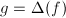,那么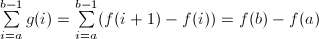,即这和微积分的互逆定理类似. 定义降阶乘则,于是 设则 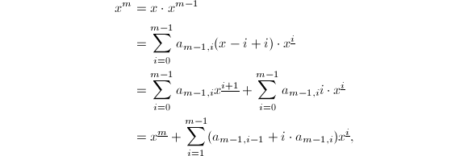 于是有递推公式其中.在组合数学中被称为第二类斯特林(Stirling)数,它表示将一个元有限集划分为 ,它满足个非空子集的方法数.以为例:
,它满足个非空子集的方法数.以为例:
- 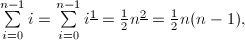

设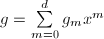,则
因此
超几何级数
和多项式级数的情形一样,首先研究一元超几何单项式级数求和.
 的有理函数.
的有理函数.
- 二项式系数是超几何单项式,因为
设并且满足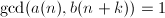,.设,则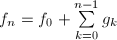, 令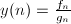,则即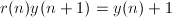,所以存在使得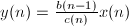,其中
令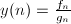,则即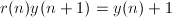,所以存在使得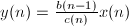,其中
极大阶乘分解
极大阶乘分解(Greatest Factorial Factorization)是多项式的一种特殊分解.
这样定义是为了保证没有更小的降阶乘因子,因为如果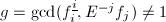,则. 为首一多项式,记
为首一多项式,记 它满足:
它满足:
根据极大阶乘分解的定义,它有很好的性质.
 ,则
,则
Gosper算法
在上面的讨论中,超几何单项式级数求和归结到求解超几何单项式的差分原函数.给定超几何单项式 ,设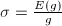,,则
于是由超几何单项式的性质可以设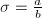,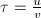,其中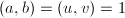,并且均为首一多项式,上式化为这样我们就把求解差分原函数的问题归结到求解多项式方程,理论上可以直接通过待定系数法像求解线性方程组一样解出这个方程来,但是计算量很大.
,设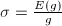,,则
于是由超几何单项式的性质可以设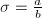,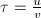,其中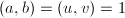,并且均为首一多项式,上式化为这样我们就把求解差分原函数的问题归结到求解多项式方程,理论上可以直接通过待定系数法像求解线性方程组一样解出这个方程来,但是计算量很大.
Gosper算法利用极大阶乘分解来求解这个多项式方程,记,设,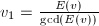,则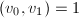,方程两边同除以得其中于是有设,则
再由,可得若 ,则
而这等价于我们可以写出求
,则
而这等价于我们可以写出求 的某一个倍数的算法.
的某一个倍数的算法.
 为首一多项式.
为首一多项式. 或
或 .若
.若 ,输出1.
,输出1. ,
, ,对依次计算
,对依次计算  .
.现在我们将方程化成了其中为已知的首一多项式.左右同除以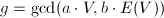,得 其中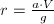,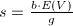,.设其中
其中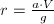,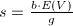,.设其中 可以这样确定:
可以这样确定:
设, 为中的系数.
为中的系数.
- 若或,令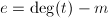.
- 若,不可解.
- 若,设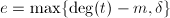,如果,不可解.
比较对应项系数将得到一个上三角阵的线性方程组,这时就可以解出来.通过这一系列手续,最终求得